Notifications
Once evaluated, alerts are sent to recipients. Recipients, along with their associated endpoints, are managed from the system interface.
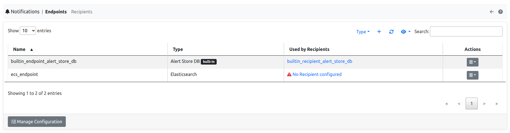
Recipients are associated to one, and only one endpoint, but the same endpoint can be shared across multiple recipients.
Endpoints and recipients have a type and a set of configuration parameters which depends on the type. All the available endpoints and recipients are described in this section.
Endpoints contain common configuration which is then extended with recipients configuration. For example, the email endpoint contains the SMTP server address, whereas email recipients contain destination email addressses. This allows the creation of multiple email recipients, all sharing the same endpoint and, thus, the same SMTP server address.
An extensive example can bee seen at https://www.ntop.org/ntopng/using-ntopng-recipients-and-endpoints-for-flexible-alert-handling/.
Builtin
A builtin Alert Store DB recipient, along with its builtin Alert Store DB endpoint, is always present. This is used to deliver alerts to the internal database (SQLite or ClickHouse) and have them accessible inside the web UI. Engaged alerts are not affected by the builtin pair and are always shown. For example, the following alerts are shown under Flow Alerts because they have been delivered to the builtin recipient. The builtin recipient cannot be edited or deleted.
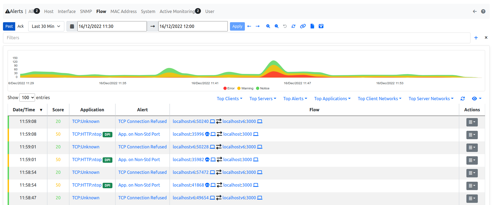
Delivery Criteria
Each recipient can be configured to receive alerts on the basis of a few criteria:
Severity
Alert Category
Host Pool
Tags
Severity Criteria
A minimum severity is indicated when creating/editing the recipient. All alerts having the indicated (or an higher severity) will be delivered to the recipient.
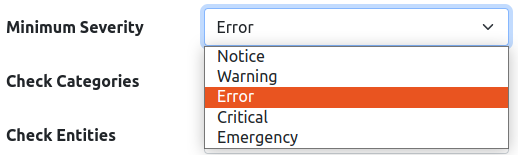
Check Category
Multiple types can be indicated when creating/editing the recipient. All alerts belonging to the indicated types will be delivered to the recipient.
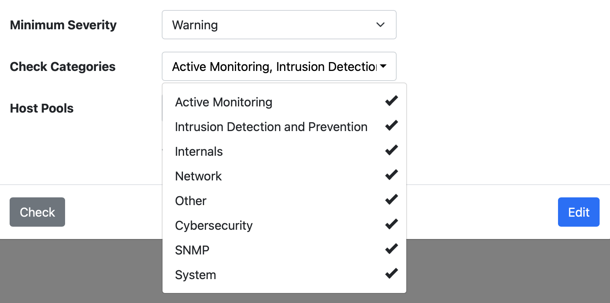
Check Entity
Multiple types can be indicated when creating/editing the recipient. All alerts belonging to the indicated entity will be delivered to the recipient.
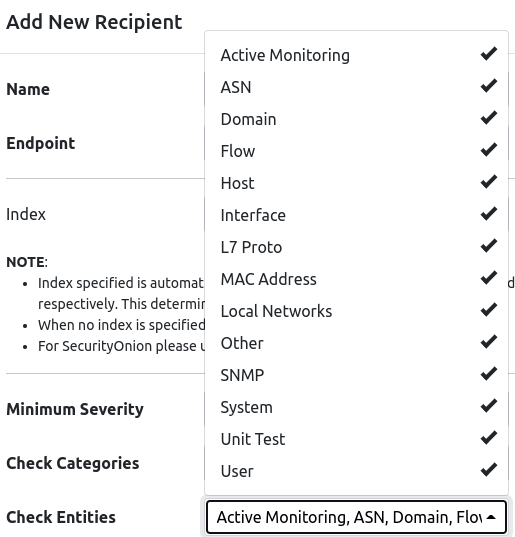
Host Pool Criteria
None or multiple host pools can be configured to filter alerts which are relative to hosts, including Flow and Host alerts.

Active Monitoring
None or multiple alerts regarding active monitored devices can be configured.
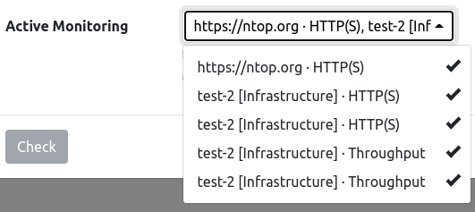
Sending Issues
In ntopng Enterprise XXL and above, with the issues enabled, the Send option of a recipient has, next to Alerts, the Issues item:
Alerts: the recipient receives every alert.
Issues: the recipient receives a notification when an issue is opened, escalated (its severity is raised), reopened or resolved, instead of one notification per alert. When the same problem generates thousands of alerts, the recipient is notified once.
The delivery criteria above (severity, category, entity, pools, tags) apply to the issues too. The severity of an issue is the highest severity of its alerts: a recipient with a minimum severity can receive the escalation of an issue whose opening was below that severity. Suppressed issues are not notified.
When the issues are turned off, a recipient sending issues receives the alerts (Issues (disabled: the alerts are sent)), and the issues again when they are turned on.

The notification tells what happened to the issue, the alert that caused it (if any), the number of alerts and peers of the issue and the link to the issue details, for example:
[Interface: eth0] [Severity: Notice] [Flow] [Unsafe Protocol] [192.168.1.58 (Attacker)] [Issue #3 Opened]
Insecure protocol used - Alerts: 1 since 28/10/2026 07:05:22 - Peers: 1 - Details: https://ntopng:3000/lua/pro/issue_details.lua?issue_id=3
Webhook and other JSON endpoints receive the alert fields with "action": "issue" and an issue
object with issue_id, event (open, escalate, reopen, resolve), status, severity,
first_seen, last_seen, resolution, signal_count, peers_count, role and url.
The link uses the Host Address preference, when set.
Available Endpoints
Currently available Endpoints and license required are:
Community |
Pro |
Enterprise M |
Enterprise L/XL |
|
|---|---|---|---|---|
Discord |
x |
x |
x |
x |
Elasticsearch |
x |
x |
x |
|
x |
x |
x |
x |
|
Fail2Ban |
x |
x |
x |
|
Mattermost |
x |
x |
x |
x |
MS Teams |
x |
|||
PagerDuty |
x |
|||
Shell Script |
x |
x |
x |
x |
Slack |
x |
x |
x |
x |
Syslog |
x |
x |
x |
x |
Syslog checkmk |
x |
x |
||
Syslog CEF |
XL only |
|||
Telegram |
x |
x |
x |
x |
Webhook |
x |
x |
x |
x |
x |
||||
TheHive |
x |
x |
x |
Below a guide on how to configure each Endpoint/Recipient.
Discord
Discord (https://discord.com) is a popular collaboration application that can be used by ntopng to deliver alerts to recipients. In order to deliver alerts you need to configure a new Discord server as described in this document https://support.discord.com/hc/en-us/articles/204849977-How-do-I-create-a-server- and the to create a webhook as decribed here https://support.discord.com/hc/en-us/articles/360045093012-Server-Integrations-Page

Once in the webhook click on the “Copy Webhook URL” button that will copy the URL into your clipboard. Done this we’re ready to create a ntopng Discord Endpoint. On the System interface (upper menubar, dropdown menu) select Notifications -> Endpoints and click on the + icon. A new dialog windown will open: select Discord from the endpoint type menu and insert the Webhook URL you have previusly copied on your clipboard, pick a endpoint name you like and save it.
Done this you can create a recipient for this endpoint. You can optionally specify a Username in the recipient page that is used when messages are delivered to Discord. If you do not set a username the one used in the Discord Webhook page will be used (usually set to ‘Captain Hook’).

The above picture shows sample alerts delivered to a discord server.
Elasticsearch
This recipient is designed to send alerts to Elasticsearch.
Note
Elasticsearch recipient is only available in ntopng Enterprise M or above.
The endpoint requires the Elasticsearch URL to be specified, along with (optional) parameters for the authentication.
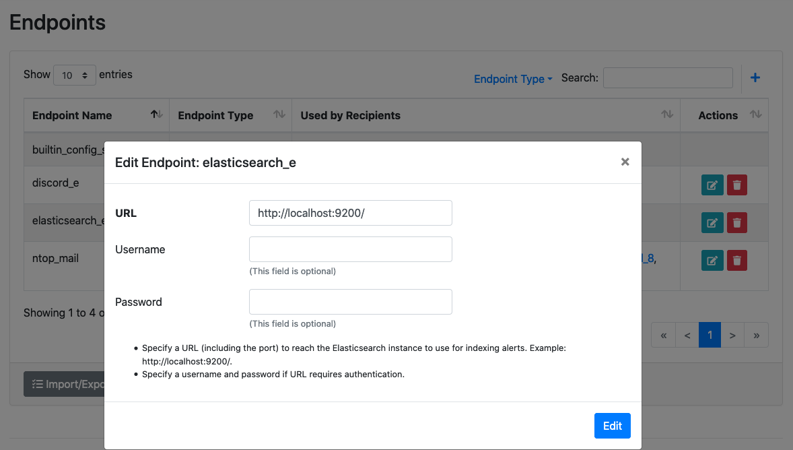
Elasticsearch Endpoint
Multiple recipients can then be associated to the Elasticsearch endpoint. Any recipient can use a different prefix for the index names.
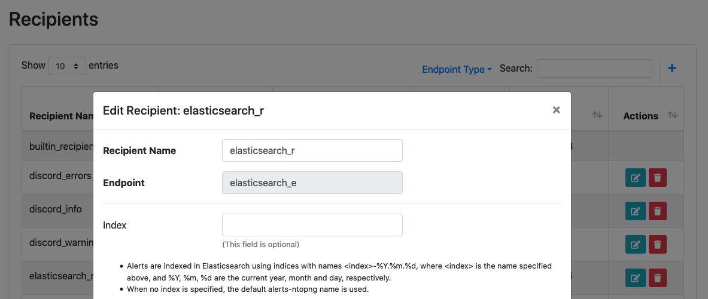
Elasticsearch Recipient
By default, alerts are sent to Elasticsearch indexes alerts-ntopng-<year>.<month>.<day>. A new index is created every day. For example, index names used for two consecutive days of April 17th and 18th 2020 are alerts-ntopng-2020-04-17 and alerts-ntopng-2020-04-18. If an index prefix is specified in the endpoint, then the prefix is used in place of alerts-ntopng.
The Elasticsearch connection can be tested by clicking the “Test Connection” button of the preferences.
Note
Elasticsearch alert endpoint requires at least Elasticsearch version 7. Version can be tested by clicking the “Test Connection” button of the preferences.
Alerts are sent to Elasticsearch in JSON format, following the ECS format (more info at ECS). The following keys are always present:
@timestamp: UTC/GMT alert detection date and time in ISO format yyyy-MM-dd’T’HH:mm:ss.SSSZ.message: the message field containing the log messageecs.version: ECS version this event conforms to.event.category: represent the category of the event, one of {authentication, configuration, database, …}. List of all the available types <https://www.elastic.co/guide/en/ecs/current/ecs-allowed-values-event-category.html>event.created: contains the date/time when the event was first read, in ISO format yyyy-MM-dd’T’HH:mm:ss.SSSZ.event.dataset: name of the dataset.event.kind: gives high-level information about what type of information the event contains, one of {alert, event, metric, state, pipeline_error, signal}.event.module: name of the module this data is coming from.event.risk_score: risk score or priority of the event.event.severity: the numeric severity of the event according to your event source.event.severity_label: the severity of the event written in human readable format, one of {low, medium, high, critical}.organization.name: organization name.rule.name: the name of the rule or signature generating the event.
Flow Alerts have the following additional fields:
source.ip: IP address of the source (IPv4 or IPv6).source.port: port of the source.source.as.number: unique number allocated to the autonomous system. The autonomous system number (ASN) uniquely identifies each network on the Internet.source.geo.city_name: geolocalization of the source, city name (when available).source.geo.continent_name: geolocalization of the source, continent name (when available).source.geo.country_name: geolocalization of the source, country name (when available).source.geo.country_iso_code: geolocalization of the source, country ISO code (when available).source.geo.location.lat: latitude of the source.source.geo.location.lon: longitude of the source.network.community_id: a hash of source and destination IPs and ports, as well as the protocol used in a communication. This is a tool-agnostic standard to identify flows.network.protocol: L7 Network protocol name. ex. http, lumberjack, tls.network.transport: L4 Network protocol name. ex. tcp, udp.network.vlan.id: VLAN ID.destination.ip: IP address of the destination (IPv4 or IPv6).destination.port: port of the destination.destination.as.number: unique number allocated to the autonomous system. The autonomous system number (ASN) uniquely identifies each network on the Internet.destination.geo.city_name: geolocalization of the destination, city name (when available).destination.geo.continent_name: geolocalization of the destination, continent name (when available).destination.geo.country_name: geolocalization of the destination, country name (when available).destination.geo.country_iso_code: geolocalization of the destination, country ISO code (when available).destination.geo.location.lat: latitude of the destination.destination.geo.location.lon: longitude of the destination.
json_format = {
"organization": {
"name": "ntop"
},
"rule": {
"name": "Low Goodput Ratio"
},
"ecs": {
"version": "1.6.0"
},
"event": {
"severity_label": "low",
"created": "2020-11-23T14:20:56.0Z",
"category": "network",
"module": "ntopng",
"kind": "alert",
"severity": 3,
"dataset": "alerts",
"risk_score": 10
},
"source": {
"port": 60952,
"ip": "192.168.1.29"
},
"destination": {
"geo": {
"continent_name": "NA",
"country_iso_code": "US"
},
"ip": "23.206.251.35",
"as": {
"number": 16625
},
"port": 80
},
"network": {
"community_id": "1:fUGQhJ6nxu/LILCAW+Lb8dF4sKU=",
"transport": "tcp",
"protocol": "http"
},
"message": "{\"cli_os\":\"Intel Mac OS X 10_13_6\",\"cli_continent_name\":\"\",\"flow_status\":12,\"cli_blacklisted\":false,\"alert_entity\":4,\"alert_entity_val\":\"flow\",\"proto.ndpi\":\"HTTP\",\"srv_localhost\":false,\"proto\":6,\"alert_tstamp\":1606141256,\"cli_addr\":\"192.168.1.29\",\"srv_addr\":\"23.206.251.35\",\"srv2cli_packets\":5,\"alert_severity\":3,\"srv_continent_name\":\"NA\",\"srv_os\":\"\",\"srv_asn\":16625,\"community_id\":\"1:fUGQhJ6nxu/LILCAW+Lb8dF4sKU=\",\"first_seen\":1606141240,\"score\":10,\"action\":\"store\",\"cli_localhost\":true,\"cli_port\":60952,\"cli_city_name\":\"\",\"srv2cli_bytes\":558,\"is_flow_alert\":true,\"alert_type\":72,\"cli2srv_bytes\":681,\"alert_json\":\"{\"info\":\"ocsp.int-x3.letsencrypt.org/MFgwVqADAgEAME8wTTBLMAkGBSsOAwIaBQAEFH7maudymrP8%2BKIgZGwWoS1gcQhdBBSoSmpjBH3duubRObemRWXv86jsoQISAz5JqGV%2B4ao1EMKq6MZy01gX\",\"status_info\":\"{\"goodput_ratio\":39.790153503418,\"ntopng.key\":3631703348,\"alert_generation\":{\"subdir\":\"flow\",\"script_key\":\"low_goodput\",\"confset_id\":0},\"hash_entry_id\":8210}\"}\",\"cli_country_name\":\"\",\"cli2srv_packets\":6,\"srv_country_name\":\"US\",\"cli_asn\":0,\"srv_port\":80,\"srv_city_name\":\"\",\"l7_master_proto\":7,\"ifid\":0,\"srv_blacklisted\":false,\"vlan_id\":0,\"l7_proto\":7}",
"@timestamp": "2020-11-23T14:20:56.0Z"
}
Email
One can create the email endpoint as follows
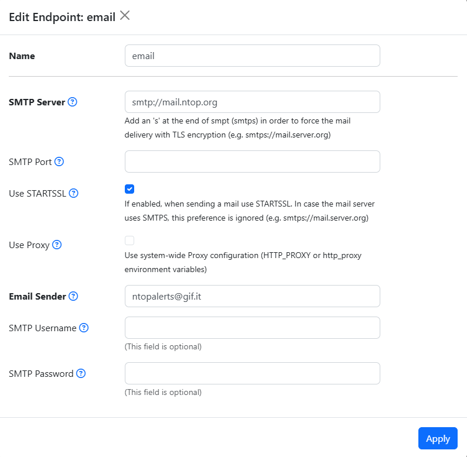
Email Endpoint Configuration
Then, one can create multiple email recipients sharing the same endpoint but each one with a different destination email address:

Email Recipient Configuration
Note
If TLS Encryption is a must, (so the notifications always need to be sent encrypted), use: smtps://youremail.org
By adding the ‘s’ after smtp, ntopng will ensure to force the communication to be encrypted. Also in case this is the case, the STARTSSL option will be ignored
Fail2Ban
First of all, install Fail2Ban, for infos about the download check Fail2Ban. After that you will be able to see the Fail2Ban Endpoint.
After creating the endpoint, create a new recipient to associate with the new endpoint just created and put inside the JAIL option the JAIL that’s going to be used to ban the dangerous IP (to have more infos about the JAIL check here).
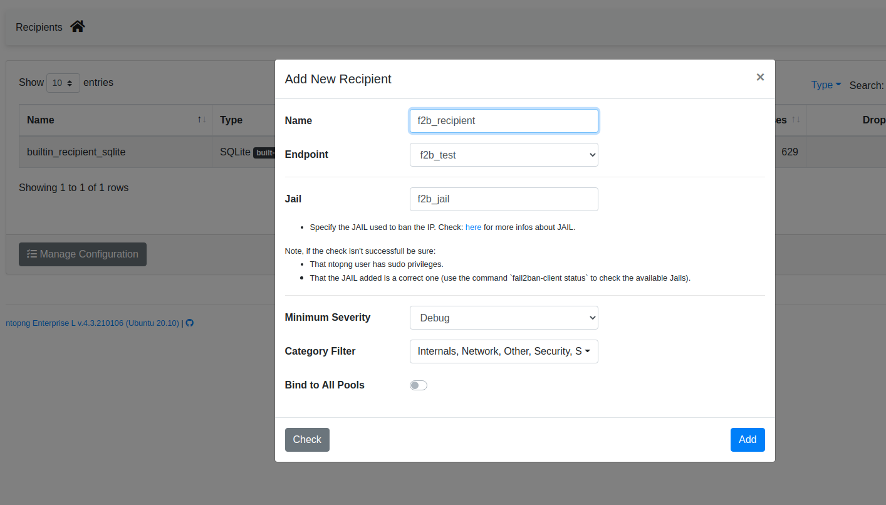
Note
If the Recipient Check isn’t succesfull, be sure that ntopng has sudo privileges and that the JAIL added is a correct one.
Fail2Ban Endpoint isn’t going to be called for each alert but only for those that supports it, in the specific case only those with the Attacker available; check the specific user guide section for more infos Alert Summary.
Mattermost
Mattermost is an Open Source, self-hostable online chat service designed as an internal chat for organisations and companies.
After creating the endpoint, create a new recipient with the new endpoint just created and put the channel id for a valid mattermost channel inside of it.
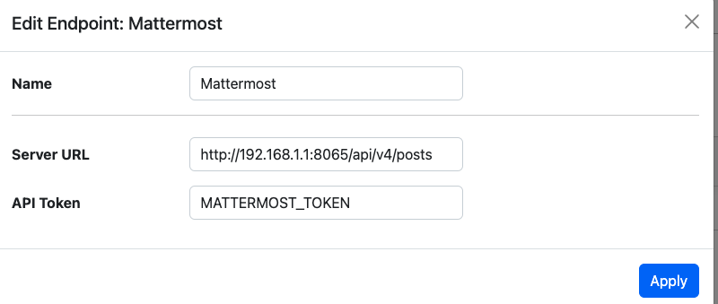

Note
If the Recipient Check isn’t succesfull, be sure that ntopng has sudo privileges and that the Mattermost URL and protocol/port added are correct.
Mattermost will be called for all alerts that match the criteria specified in the recipient config.
MS Teams
Like for the Webhook, Microsoft Teams endpoint can be used to deliver alert information to a MS Teams Channel configuring a Connector in MS Teams and the URL in ntopng. Alert information are provided to MS Teams in Message Card (Specific MS Teams JSON format) by means of POST requests.
To Configure MS Teams to be used by ntopng as an endpoint first it’s needed to enable the selected Channel Connector. Go into the Channel Settings and click onto Connectors. Add Incoming Webhook to MS Teams Connectors and then click on Configure and then on Create. Take the URL given by MS Teams and paste into ntopng endpoint (Connector).
Official guide to MS Teams Webhook can be found Here

Note
MS Teams recipient is only available in ntopng Enterprise L or above.
PagerDuty
First of all, create a PagerDuty account. For information about the PagerDuty account, please refer to the following link: PagerDuty. After that, you will be able to see the PagerDuty Endpoint.
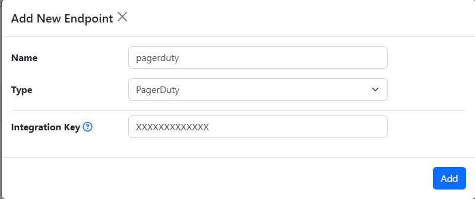
It is necessary to specify the Integration Key known also as routing_key.
To obtain the Integration Key, after logging into PagerDuty, it is necessary to create a new Integration under the Automation panel.

Once the new integration is created, the user will have the integration key required for the ntopng endpoint.
After creating the endpoint, proceed to create a new recipient to associate with the newly created endpoint.
Note
PagerDuty recipient is only available in ntopng Enterprise L or above.
Shell Script
Create the script you want to execute each time the alert is triggered and put it inside the directory /usr/share/ntopng/scripts/shell/.
Note
The script must be a shell script (.sh extention) with execution permission.
The full alert information are provided to the script through the standard input in JSON format.
A new Endpoint should be created, by selecting the script that has been created.

After that, a new recipient should be created, associated with the new endpoint just created.

Example of simple shell script reading the alert information from the standard input and logging them to file:
#!/bin/bash
cat - >> /tmp/shell-script.log
Slack
Slack is a IRC-like business communication platform that can be used by ntopng to deliver alerts. In order to deliver alerts to a slack channel you need to:
Create a new channel to be used for notifications
Create a new Slack app from Here

After creating a Slack app, select Incoming Webhooks
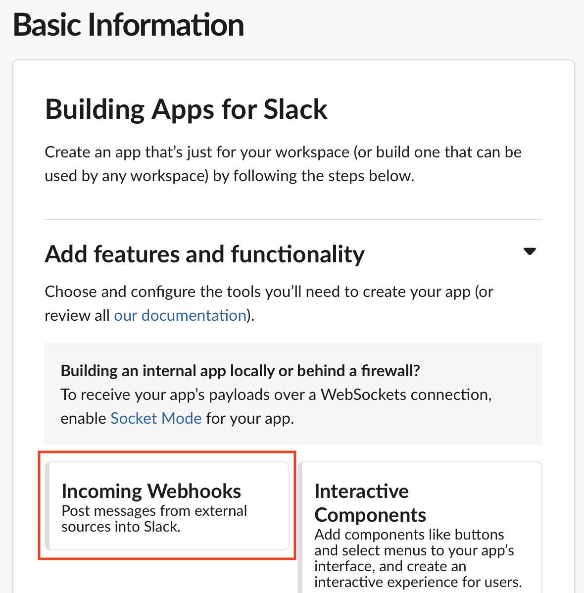
Activate Incoming Webhooks

At the bottom of the page, Add a new Webhook, selecting the channel you previously created for notifications

Copy the Webhook URL to the Notification Webhook field in ntopng
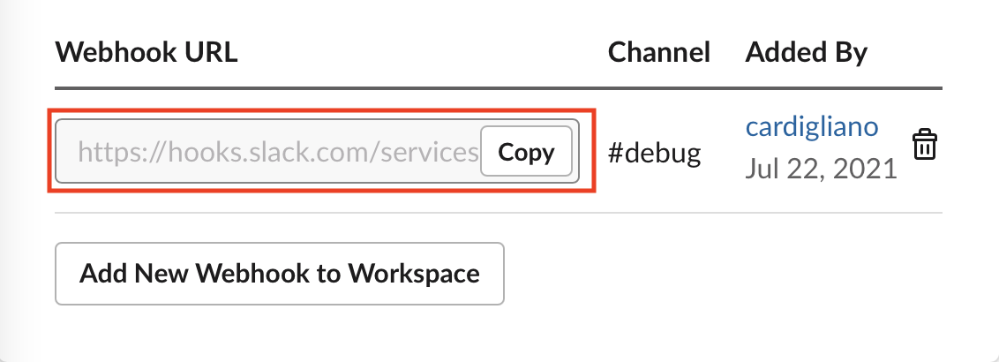
Syslog
Alerts are sent to syslog using standard syslog severities as per RFC 5424.
Note
From ntopng 7.1.260919 it is possible to add multiple syslog endpoints (previosly it was limited just to 1 syslog endpoint)
ntopng alert severities are mapped to standard syslog severities as follow:
Info becomes syslog
LOG_INFOequal to the integer 6Warning becomes syslog
LOG_WARNINGequal to the integer 4Error becomes syslog
LOG_ERRequal to the integer 3
A few formats are available when sending alerts to syslog: Text (plaintext), JSON (Raw), ECS, Checkmk, CEF. The default format is Text and can be changed from the ntopng preferences page.
Text
Plaintext alerts have the following format:
[tstamp][severity][type][entity][entity value][action] ... and a plain text message...
Fields have the following meaning:
[tstamp]is the time at which ntopng detected the alert. This time is not necessarily equal to the time the alert has reached syslog.[severity]is the severity of the alert. Severities are also used when dispatching messages to syslog. Severities are “Warning”, “Error” of “Info”.[type]is a string that indicates the type of alert.[entity]is a class that categorizes the originator of the alert. It can be an “host”, an “interface” and so on.[entity value]is an identifier that uniquely identifies the originator along with the[entity]. For example, entity value for an “host” is its IP address, for an “interface” is its name, for a “device” is its MAC address, and so on.[action]indicates whether this is an engaged alert, an alert that has been released or if it just an alert that has to be stored.
Alert types, entities, and actions are explained in detail in section Alerts.
Examples of alerts sent to syslog are
devel ntopng: [<tstamp>][Info][Device Connection][Device][58:40:4E:CE:28:29] The device Apple_CE:28:29 has connected to the network.
devel ntopng: [<tstamp>][Error][Threshold Cross][Interface][iface_0][Engaged] Minute traffic crossed by interface eno1 [1.08 MB > 2 Bytes]
devel ntopng: [<tstamp>][Warning][Remote to Remote Flow][Flow] Remote client and remote server [Flow: 192.168.1.100:138 192.168.1.255:138] [L4 Protocol: UDP]
JSON
JSON alerts have the following keys that are in common with plaintext alerts, namely [entity], [entity value], [action], [tstamp], [severity] and [type].
The additional keys are:
message: is a text message describing the alert.ifid: the id of the monitored ntopng interfacealert_key: is a string that, for threshold-based alerts, represents the check interval (e.g., min, 5min, hour) and the type of threshold checked (e.g., bytes, packets).
Examples of JSON alerts sent to syslog are
develv ntopng: {"entity_value":"ntopng","ifid":1,"action":"store","tstamp":1536245738,"type":"process_notification","entity_type":"host","message":"[<tstamp>]][Process] Stopped ntopng v.3.7.180906 (CentOS Linux release 7.5.1804 (Core) ) [pid: 4783][options: --interface \"eno1\" --interface \"lo\" --dump-flows \"[hidden]\" --https-port \"4433\" --dont-change-user ]","severity":"info"}
devel ntopng: {"message":"[<tstamp>][Threshold Cross][Engaged] Minute traffic crossed by interface eno1 [891.58 KB > 1 Byte]","entity_value":"iface_0","ifid":0,"alert_key":"min_bytes","tstamp":1536247320,"type":"threshold_cross","action":"engage","severity":"error","entity_type":"interface"}
Checkmk
This format is used to track ntopng events within checkmk.
In order to export alerts to Checkmk, the Checkmk host, port and protocol should be configured in the syslog endpoint configuration in ntopng.
Please check the Setting up the Event Console section of the Checkmk documentation to configure syslog ingestion in Checkmk. This usually requires enabling the syslog addon by using the omd tool, and adding a filter for the ntopng alerts under Setup -> Event Console.
After that, alerts exported by ntopng should be visible under Monitor -> Events in Checkmk.
Alerts exported using the Checkmk format have the following format:
Fields have the following meanings:
sl: an identifier of the event, used, for example, to perform searches.comment: contain the information described in the Plaintext section, except for timestamp, which is assigned by checkmk to the event.severity: the severity of the alert.
Example of alert sent to syslog with the Checkmk format:
devel ntopng: [Checkmk@18662 sl="4" comment=" (Interface: enp0s3) (Severity: Warning) (Flow) (Binary file/data transfer (attempt)) (vbox:43972 -> it.archive.ubuntu.com:80) Binary file/data transfer (attempt)" severity="Warning"] Binary file/data transfer (attempt)
The service level values have to be manualy mapped inside Checkmk under Setup -> Global settings > Notifications > Service Levels.
The final result should look like the one showed in the image below.
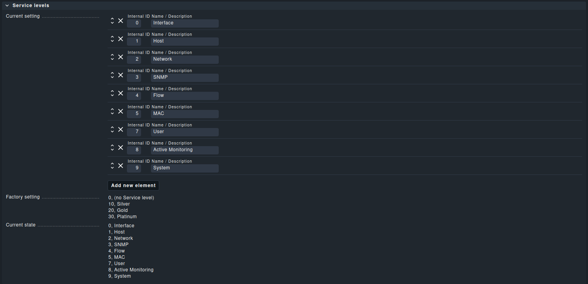
CEF (Common Event Format) for SIEM
ntopng can export its alerts to a SIEM (Security Information and Event Management) in the Common Event Format (CEF), over syslog. CEF is understood by Splunk, ArcSight, Microsoft Sentinel, IBM QRadar, Elastic and most other SIEMs and log management platforms, so network and security alerts detected by ntopng can be correlated with the events of the rest of the infrastructure. This feature requires an Enterprise XL license.
To export alerts to a SIEM, create a Syslog endpoint, set the Format to CEF (Common Event Format, for SIEM), and set the host, port and protocol (UDP or TCP) on which the SIEM receives syslog. Then create a recipient for the endpoint. As for any other recipient, the Minimum Severity and the other delivery criteria can be used to send only the alerts that are of interest, instead of all the alerts.
Note
A recipient that uses the CEF format can send only alerts. Reports and other notification types are not available.
All the alert types are exported (flow, host, network, interface, SNMP device, MAC, user, active monitoring, AS and system alerts). Each alert is sent as a syslog message that contains a CEF event:
CEF:0|ntop|ntopng|Version|Alert id|Alert name|Severity|key=value key=value ...
The header fields are:
Version: the ntopng version.Alert id: the numeric identifier of the alert type. The same id is used by different entities, so the alert type is identified together with the entity (ntopEntity) or by thentopAlertKeyfield.Alert name: the readable name of the alert, for example Low Goodput Ratio.Severity: a number from 0 to 10, computed from the alert score.
After the header there is a list of key=value fields. The main ones are the following:
Field |
Description |
|---|---|
|
Start and end time of the alert, in milliseconds since the epoch. |
|
Source (client) IP address and port. |
|
Destination (server) IP address and port. |
|
Names of the source and destination hosts, as known by ntopng. |
|
Transport protocol (TCP, UDP…) and application protocol (nDPI). |
|
Bytes from the server to the client and from the client to the server. |
|
The description of the alert, as shown in the ntopng alerts page. |
|
The name of the alert. |
|
The name of the ntopng interface that generated the alert. |
|
Name given to the network of the client and of the server (flow alerts). Host alerts use ntopNetwork. |
|
A text that identifies the alert type, for example alert_flow_low_goodput. |
Alerts that are not about flows are about a single entity, so they have different fields. For example, SNMP device alerts have dvc (device address)
and dvchost (device name), MAC alerts have smac, and user alerts have suser.
All the other information that ntopng has about the alert (autonomous system, geolocation, blacklists, attacker and victim flags, flow risks, the details specific to the alert type, and so on)
is sent as additional fields, whose name starts with ntop followed by the name of the field, for example ntopCliAsn. Fields with no value are not sent.
Splunk
ntopng alerts in CEF format are indexed by Splunk and can be searched, charted and used in dashboards and Splunk alerts, like the events of any other SIEM data source.
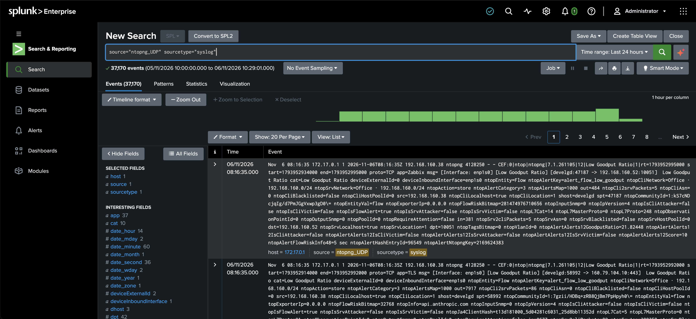
ntopng alerts received in Splunk using the CEF format
By expanding an event, all the fields of the alert are available, and can be used in searches, dashboards and Splunk alerts.
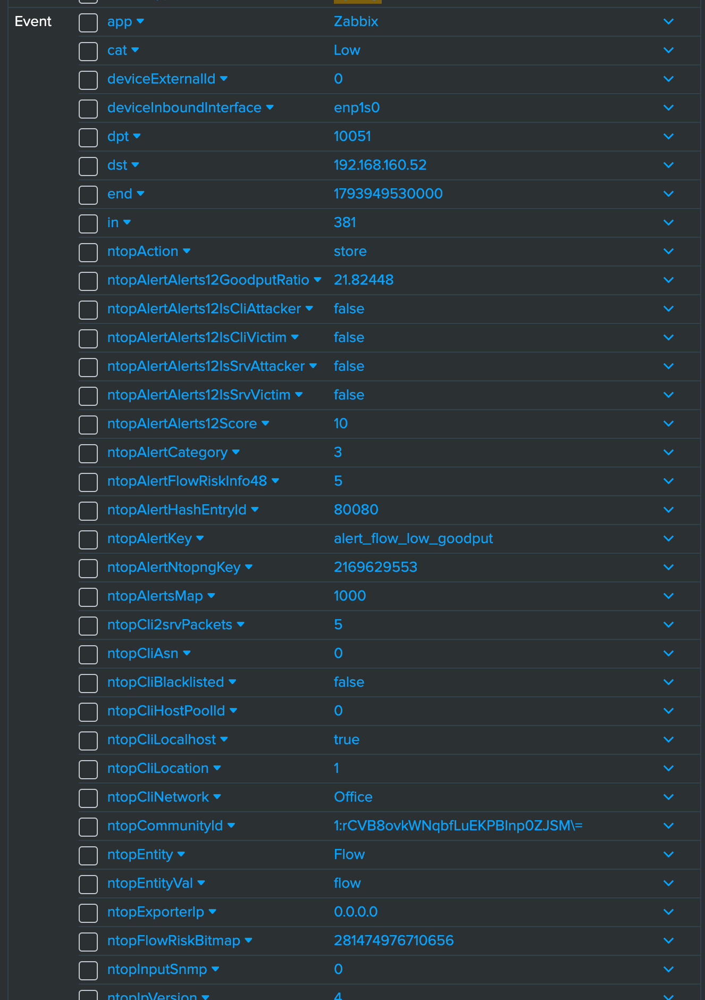
Fields of an ntopng alert in Splunk
Telegram
First of all navigate from the Web GUI into the section Notification->Endpoints; after that, click on the + on the right corner of the Endpoint window, this way it will add a new Endpoint for the notification system. Select inside the Type window Telegram. Then open Telegram, search for @BotFather and start a new conversion with it.
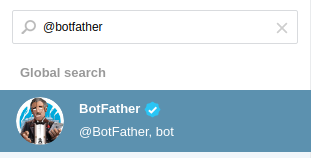
- After that, send the following messages in this order:
/newbotbot_name(the name that’s going to have the bot, e.g. ntopng_telegram_script)bot_username(the username that’s going to have the bot, e.g. ntopng_telegram_script_bot)
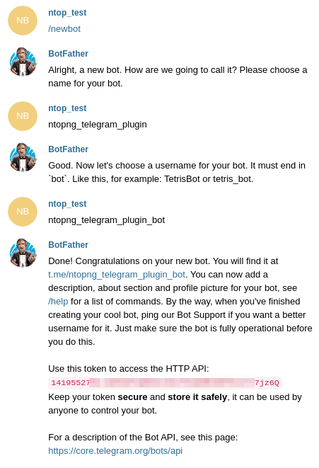
Now @BotFather will give a token, useful to enable ntopng to talk with the bot actually created; copy this token and paste it into the Add New Endpoint window of ntopng previously opened, name the Endpoint (e.g. telegram_endpoint) and click Add.
After that navigate to Notification->Recipients and, just like before, click on the + simbol on the right high corner of the Recipient window. Now select into the Endpoint section of Add New Recipient the endpoint previously created, name it (e.g. telegram_recipient_mychat), select the Minimum Severity of the notifications and the Category of the notification desired.
Then go back to Telegram. If the bot have to personally send the alarms directly into the private chat then follow these steps:
start a conversation with the ntopng bot in Telegram (a bot can’t initiate conversation with a user!)
search for @getidsbot and start a conversation with it
copy the id @getidsbot gave to you

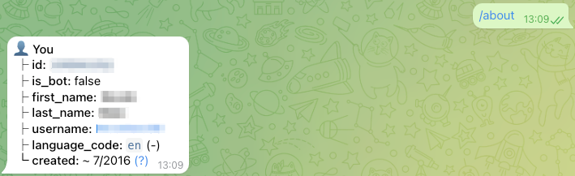
- Otherwise if you want to add the bot to a group chat and send messagges on that group, follow the following steps:
add the bot you previosly created (searching for his name) to your group chat
call the REST API: https://api.telegram.org/bot<botToken>/getUpdates to find out the group chat id
copy the id the REST Response gave to you
Now paste the id into the Add New Recipient window of ntopng and click Add (click Test Recipient to test if the bot is working correctly).
Now add to the relative Pool the Telegram recipient you just created and it’s done!

Webhook
Webhooks can be used to deliver alert information to a HTTP endpoint by configuring the URL in ntopng. Alert information are provided to the webhook in JSON format by means of POST requests.
A Shared Secret can be configured in ntopng, which is an arbitrary string included in all JSON messages.
A Username and Password can also be used to use HTTP Basic authentication.
WeChat
WeChat can be used to deliver alert information to a WeChat HTTP endpoint by configuring the URL in ntopng.
To obtain a valid WebHook URL of WeChat the user must be signed up on WeChat. After that, it is necessary to create a group chat and add a group robot there in order to obtain the WebHook URL of the group robot. For more information, check here.
Alert information are provided to the webhook in JSON format by means of POST requests.
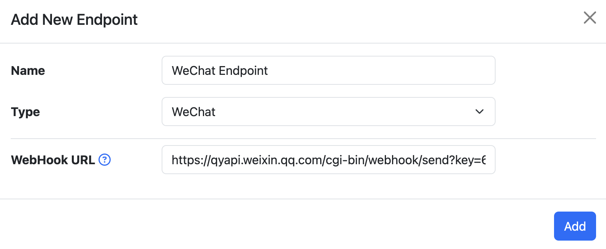
TheHive
First of all, install TheHive. For information about the downloads and installation, please refer to the following link: TheHive. After that, you will be able to see the TheHive Endpoint.
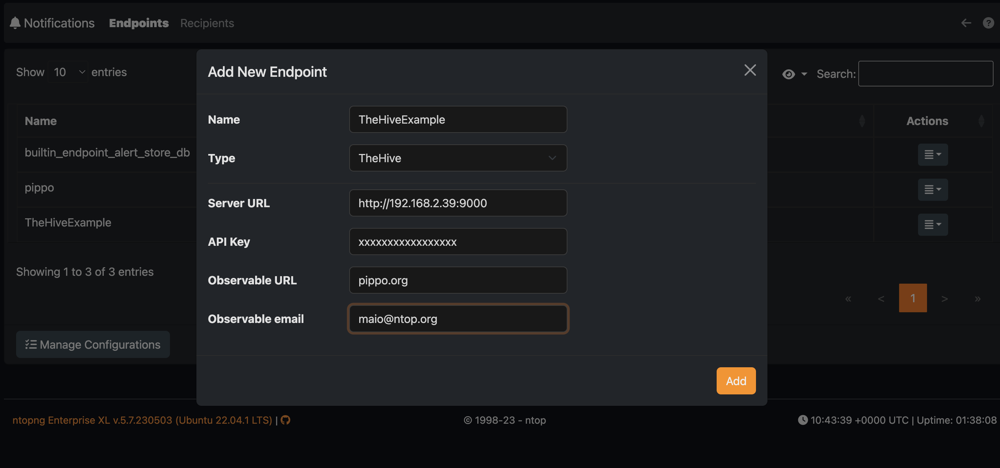
- It is necessary to specify the following:
the Server URL of your TheHive.
the API Key for a user with the “manageAlert/create” profile.
the observable URl;
the observable email.
Once you have created the endpoint, proceed to create a new recipient to associate with the newly created endpoint.
Note
TheHive recipient is only available in ntopng Enterprise M or above.